CSTI Administrative and Support Functions
The Admin Console
The Admin Console contains a range of management tools that allow administrators to schedule classes, make changes to learner accounts, add and remove roles, and pull reports.
Table of Contents- Admin Console
- Creating courses and templates
- Manage Students
- Manage Classes
- Manage Hybrids
- Manage Users
- Manage Coaches, Training Orgs, and Facilitators
- Manage Reports
Creating Courses and Templates
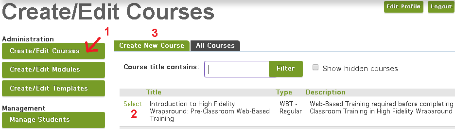Create/Edit Courses (1) will allow you to build a new course or change details on an existing one. You may search for existing courses by title and edit them by clicking Select (2). Select Create New Course (3) to build a new course.
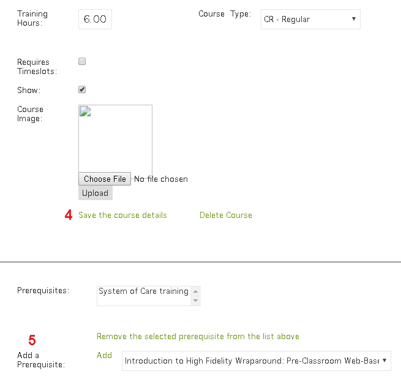
Fill in each field, then click Save the course details (4). Once your course has been saved, you can add prerequisites as needed by choosing them from the Add a Prerequisite (5) drop-down menu then clicking Add. Double-check that all fields are full, then click save again. Your course is now live.
If the course you’ve created belongs to a hybrid, you will begin the same way- by creating courses for each component of the hybrid- but you’ll also need to use the Create/Edit Modules and Create/Edit Templates to template the hybrid itself.
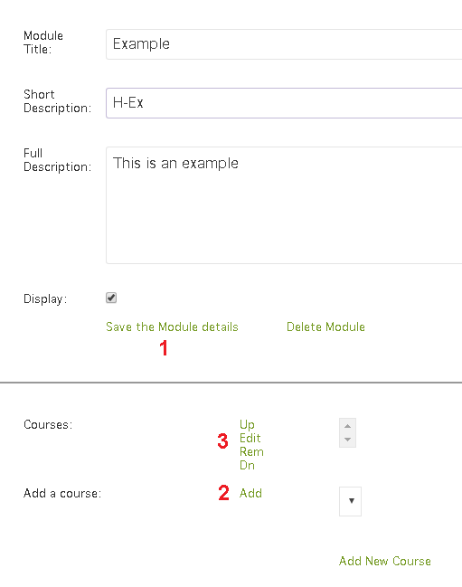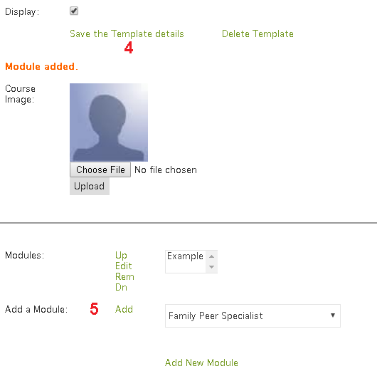
You’ll begin by entering a title and description, then after clicking Save the Module details (1), you’ll be able to attach the course you already created to the module by choosing its ID from the list at the bottom of the page then clicking Add (2) to the left of the list. Repeat this for each component of the hybrid, and use the Up, Edit, Remove, and Down (3) links to edit and reorder the list as needed. Finally, you will create a template which allows the module to be displayed as a hybrid. Enter the title and description once more, click Save the Template details (4), then use the dropdown menu at the bottom to add your module (5). Your hybrid is ready for scheduling!
Finally, if you would like to change the order of your classes in Learning Experiences, go to the Manage Course Order tab.
Manage Students
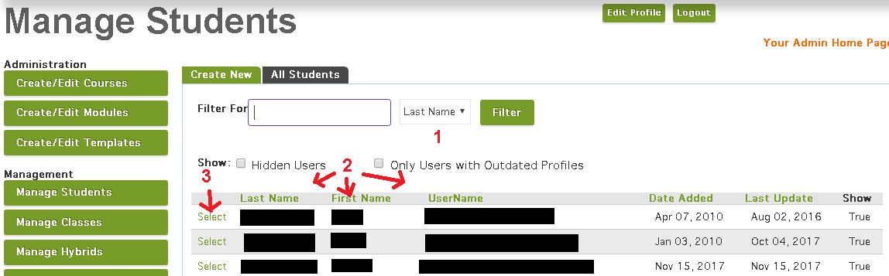The Manage Students portion of the console allows admins to view and edit student profiles. You can search for learners by first or last name or by username (1). Clicking the header of a column like Last Name or Username (2) will sort the column alphabetically. Clicking Select (3) next to a learner’s name will give you access to their profile. You will rarely need to use the Create New section, as it’s generally more practical to simply create an account the standard way by going to My Account and clicking Create one now.
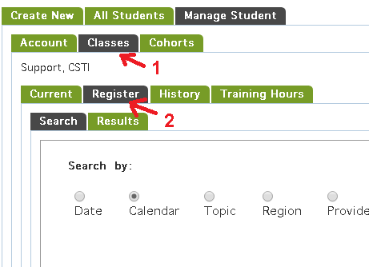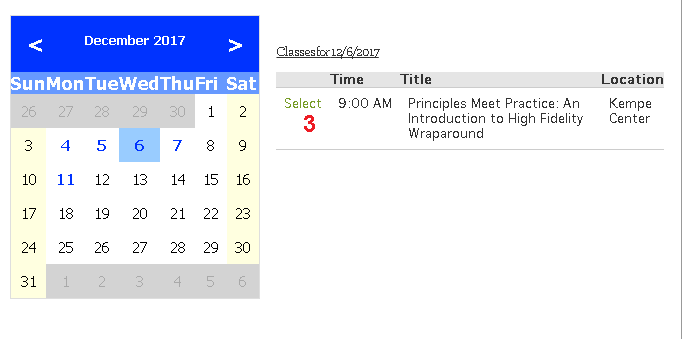If you need to check a learner’s hours or register them for a class, switch to the Classes (1) tab of their profile. Current, History, and Training Hours have the same functions as the tabs on your profile, while Register (2) allows admins to register learners for any available class. Once you’ve found a class using any of the available search functions, click Select (3) next to its title then click Register. You should see a confirmation message upon successful registration. Learners can even be registered for hidden or closed classes this way, making it especially useful for support tasks.
Manage Classes
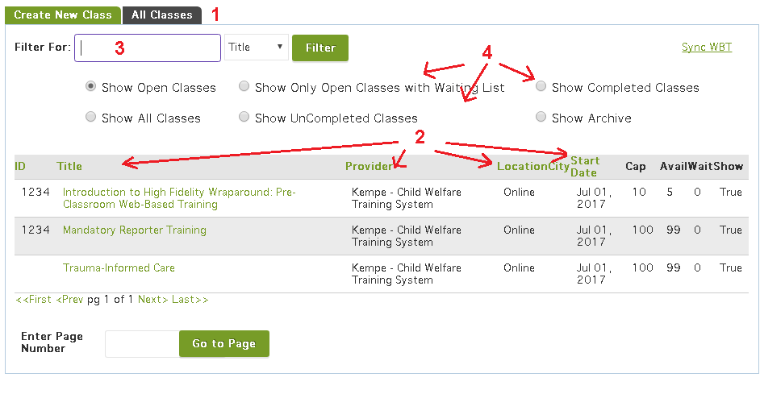In Manage Classes, admins can schedule and make changes to specific offerings of CSTI courses. The All Classes (1) tab contains a list of every scheduled class. The list can be sorted alphabetically like the student list by clicking column headers (2), searched by title, ID, location, and provider (3), and filtered by visibility, completion, and more (4).
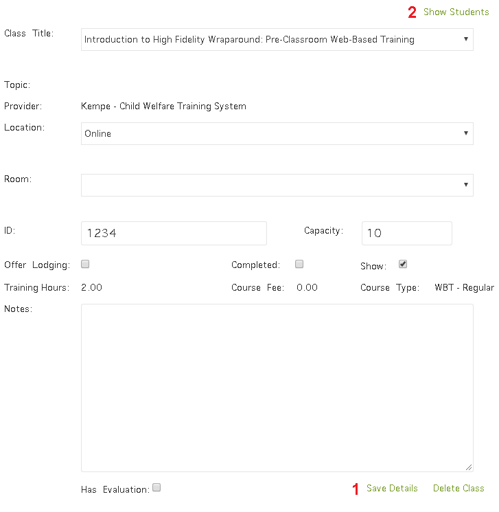
Clicking a class’s title will bring up the Edit Class tab, where any information about the class (except it’s title) can be changed.
Changes to date or facilitator will be saved automatically; all other changes must be saved by clicking Save Details (1).
Clicking the Show Students (2) link at the top right will bring up the Grade Students tab.
This tab contains a list of all learners associated with the class. A series of check-boxes allows you to filter the list by learner status (1).
Each student has a drop-down menu that allows admins to set their status manually (2).
Once all students are in a final status- complete, dropped, no show, waived, or incomplete- the class may be marked complete (3). Completed classes are automatically hidden.
Create a class
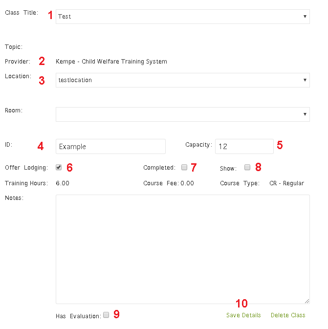To schedule a new class, go to the Create New Class tab and fill out each field:
- Class Title determines which course your class will be based upon.
- Provider will be filled in automatically based on the course.
- Location is either the physical address of an in-person class or “Online” for a web-based training.
- ID is an admin-specified string of letters and numbers that adds convenience to searching and allows staff to clarify exact classes in communication with support.
- Capacity is the total number of learners that may register for the class.
- The Offer Lodging button generates a prompt upon registration asking learners if they require lodging.
- The Completed button is primarily for display- completion should be handled in Grade Students.
- The Show button toggles show/hide status. Hidden classes are unavailable for front-end registration.
Once all sections are filled in, click Save Details (10) and you’ll be able to set a date and facilitator for the class.
Manage Hybrids
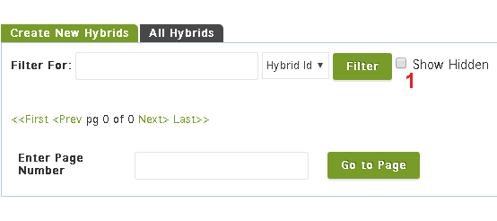The search functions found in the All Hybrids tab are almost identical to those found on the All Classes tab, with slightly fewer filtering options. If you have difficulty locating a class, be sure that Show Hidden (1) is checked.
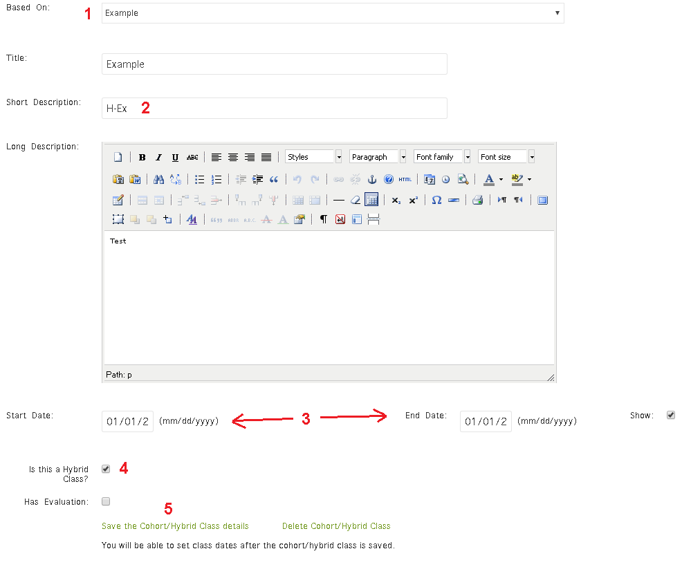
Create New Hybrids is, however, quite different from Create New Class. To create a hybrid, all its component classes will need to be created first in Create New Class.
Once the components are created, the hybrid may be made by selecting a hybrid course from the Based On drop-down (1). Title and Long Description will fill automatically; Short Description (2) allows you to input a unique ID.
Next, enter a start and end date (3)- the Start Date is the first day of the first (non-WBT) class, and the end date is the last day of the last (non-WBT) class. Always check “Is this a Hybrid Class” (4); the other boxes are optional. Click Save the Hybrid Class details (5) to save your new hybrid.
Once your hybrid has been saved, you may add the component classes that you created earlier. At the bottom of the hybrid creation screen, you’ll find a drop-down menu for each piece of the hybrid. Select your classes and your hybrid will be complete. Class selections will be saved automatically.
Manage Users
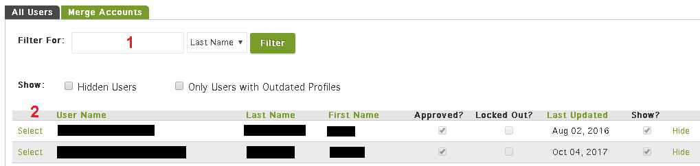The Manage Users area allows you to make changes to the roles of students, as well as hide and unhide accounts, unlock locked accounts, and merge duplicate accounts. In the All Users tab, users may be searched and sorted with the same tools as Manage Students. Clicking Select next to any user will bring up a simple profile.
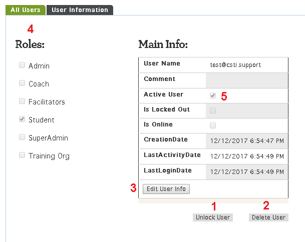To unlock a user, simply click Unlock User (1) and agree to the prompt that will appear in your browser. Users can also be deleted with Delete User (2), but except for testing accounts, hiding a user is highly recommended over deleting them, as deletion is permanent and irreversible.
Finally, clicking Edit User Info (3) allows you to bestow or remove roles (4), which grant access to the various consoles. In addition, checking the Active User box will activate an account- useful for learners who fail to receive automatic confirmation emails upon creating an account.
Manage Coaches
Coaches may, again, be searched and sorted similarly to students and users. Clicking Select will allow an admin to view that coach’s Coaches Console from their perspective; giving a list of people that they coach. Switching to the Coach Details tab will allow you to view their profile.
The Coach Requests tab allows you to view manual requests entered by learners. Each request should provide a name and email address for both the coach and the requester. To complete the request, first use Manage Users to ensure that the coach has an account with the coach role, then go to Manage Students and enter the coach’s name in the appropriate field of the student’s profile.
Manage Training Orgs
The Manage Training Orgs area allows you to add and edit training organizations. On All Training Organizations, a list of all organization will appear. Clicking Select brings you to the Training Organization Details tab, where you may view and edit contact information and toggle the organizations visibility. The People in Charge tab allows you to assign access to specific training organizations’ console functions and designate a contact person for each training organization.
Manage Facilitators
Manage Facilitators is used to assign users with the Facilitator role to specific training organizations. Once a facilitator has been assigned to a training org, clicking Select next to their name will bring open a view of their Facilitators' Console which contains a limited version of the admin’s Manage Students functions. Before adding a facilitator, first ensure that they have the facilitator role in Manage Users.
Manage Reports
Manage Reports provides a versatile platform for retrieving data from the learning management system. When you first enter this section, you’ll see a list of previously saved reports. To begin pulling a new report, switch to the Create New Report tab. Given the large number of potential options, it would be impractical to describe all possible reports. Instead, as one example, let’s say you want to create a list of every family peer specialist without the Admin role whose account was created in the last year.
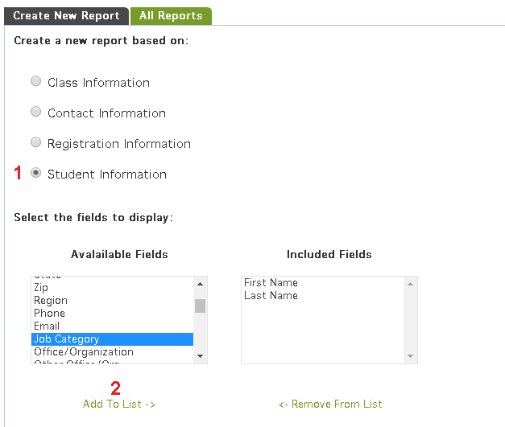- Begin by selecting Create a new report based on: Student Information.
- In the dropdown labeled Available Fields, select First Name, Last Name and ob Category. After selecting each label, click Add To List -> to move each field to the list of Included Fields.
- Once all fields have been moved, you can set conditions using the filters under Select the criteria for the group.
- Set the first column to Job Category, the Operator to IN, and the Filter Value to “I serve as a family peer specialist.”
- For the second filter, choose Permissions, NOT IN, and “Admin.” Make sure that the Relation to Next Condition switch for the first row to AND.
- Under Set the date filter, set the drop-down to Create date and click Range. Set the start date to one year ago and leave the end date as today’s date.
- Enter a title if you would like to save your report, then click Prepare Report.
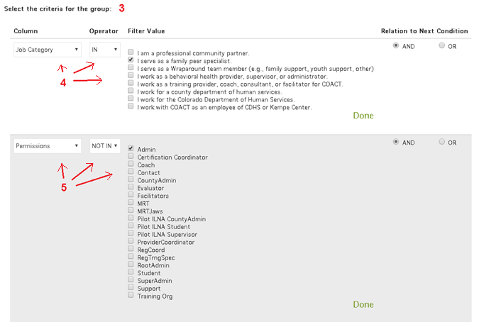
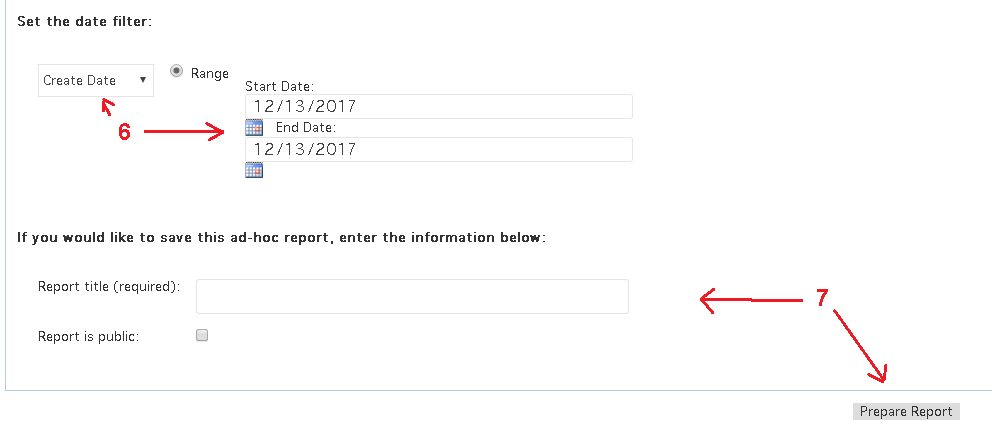
Once your report is ready, you can either view it by clicking Display Report or make changes with Change Criteria. Upon viewing the report, you will have the option to download it so that it can be further edited and analyzed in programs like Microsoft Excel.